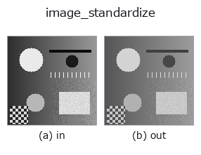

gray op• データ種: image → image
• 呼び出し: fullseye.apply(img, "image_standardize", a=0.5, b=0.5) (2-D は 1 画像 + 2 スカラつまみ a,b∈[0,1] のモデル)

*図は合成の入力 128×128 で実際に走らせた出力。左が入力、右が出力。点群は上から見た散布(明るさ = z)、1-D 列は折れ線、体積は z 方向の最大値投影、動画は中央フレーム、複素画像は振幅、絵にならない返り値は値そのもの。*
つまみ a を振る(0.1 / 0.5 / 0.9、もう一方は既定):
▸ image_standardize: つまみ a を振った図 (docs サイト)
つまみ b を振る(0.1 / 0.5 / 0.9、もう一方は既定):
▸ image_standardize: つまみ b を振った図 (docs サイト)
別の画像でも(合成シーン / 写真 / 硬貨。上段が入力、下段がその出力。つまみは既定):
▸ image_standardize: 別の画像での出力 (docs サイト)
*4 列目はカラー (H,W,3) の入力。この op は色を跨がずに扱える(色チャネルを 3 本目の空間軸として畳み込まない)。*
画像を標準化し、符号付き偏差を [0,1] の強度画像へ写す。
a の 3 帯が zscore / robust / percentile。b はクリップ幅を 1〜6 尺度に写し、-幅 / +幅 を 0 / 1、零偏差を 0.5 にする。百分位方式は 1 / 99 % を使う。生の σ 単位は normalized_threshold.image_standardize_raw を使う。image sort が [0,1] を要求するため、登録 op は生の標準化値を返さない。
空入力は尺度を推定できないため拒否する。定数入力は全 0.5 を返す（理由: 偏差 0 を符号付き強度表現の中立点へ写すため）。
つまみ(実測): a は段階的に効き、切り替わるのは a ≈ 0.33、0.67(実測。刻み 0.02 の掃きで測った位置)。
• gallery2d_gray_arith ファミリ ガイド
• サンプルデータ カタログ(DL URL / ライセンス) — 2-D は skimage.data(BSD/public)+ 合成、3-D は実データ源(Stanford/PDS 等)の DL URL。
• 演算子の来歴・参考文献 — この op 族の元になった研究/手法の出典。
• アルゴリズムの正典(著者・年)と用途は上記ファミリ使い方ガイドに記載。
下のプログラムは実際に走ることを確かめてある(図と同じ入力)。Studio のヘルプではこのブロックがボタンになり、その場で読み込んで実行できる。
image_standardize 0.50 0.50
• gallery2d_gray_arith — py -3.11 examples/gallery2d_gray_arith.py
image を入力に取れる)identity · gaussian · mean_box · mean_box_wh · bilateral · kuwahara · unsharp · median
gray)gamma · quantize_uniform · quantize_lloyd_max · quantization_error · dither_ordered · dither_floyd_steinberg · companding_mu_law · banding_map
*Provenance: ops.py — 2D operator registry. この per-op ノートは tools/opdocs.py md が自動生成(手編集しない)。*
© 2026 Kazufumi Furuse — Fullseye operator documentation. Licensed under Apache-2.0.